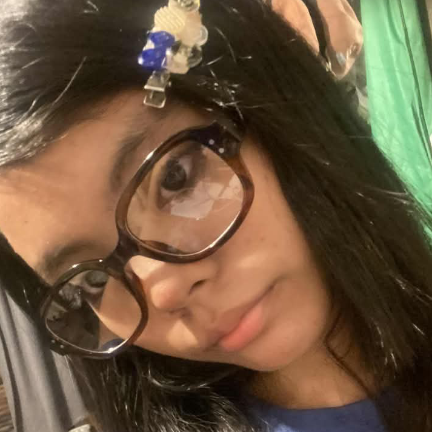

Gracelyn Belgica ❤️❤️
| Person's Name | |
|---|---|
|  | |
| Born | I forgot.. sorry!, unknown |
| Job | Professional |
The charm who brought Luck
Life Story
Gracelyn Belgica isn't just a high schooler from the Philippines or a talented artist to me—she is the person who makes my world make sense. While others see her awesome drawings or hear that incredible voice of hers, I get to see the heart behind it all. To me, she is my personal lucky charm. Whenever she’s chatted, things just seem to go right. Why She’s Irreplaceable True Empathy: Her sense of understanding is her greatest gift. I don’t need to find the right words because she already knows what I’m feeling before I even speak. The Mango Ritual: Nothing defines our friendship quite like her obsession with green mangoes. It’s a small, sour, and perfectly "Gracelyn" detail that I’ve grown to love as much as she does. Creative Soul: Seeing her create something beautiful from nothing is a constant reminder of how lucky I am to be the one standing by her side.
Achievements
Brought luck. Brought luck. Brought luck. Brought luck. Brought luck. Brought luck. Brought luck.